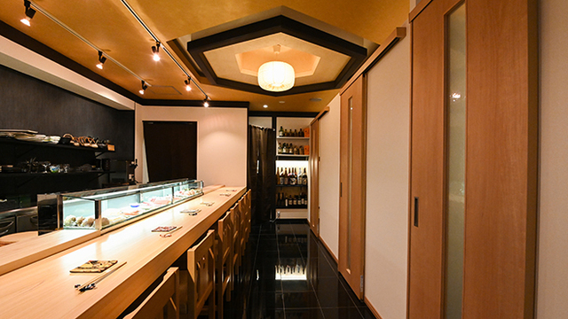
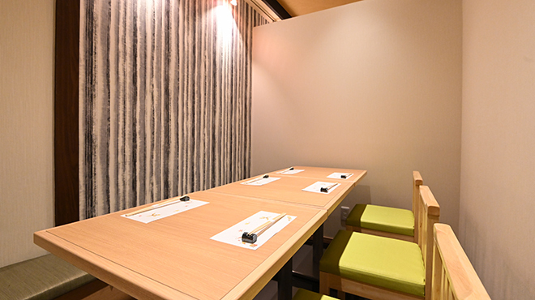

赤坂見附から徒歩二分、知る人ぞ知る隠れ家。
コースに縛られず、好きなネタを好きなだけ。
饒舌な大将との会話も、肴のうちです。
A hidden Edomae sushi bar, two minutes from Akasaka-Mitsuke Station.
No set-course rules — order whatever you like, as much as you like.
Conversation with our cheerful chef is part of the menu.

うちは、コースだけの店ではありません。「今日はつまみと握りを少し」「まずは一杯から」——その日の気分で、好きに頼んでください。そのぶん、ネタには本気。毎日市場で厳選するその日の魚を、構えない値段で。 We are not a course-only restaurant. "Just a few bites and some nigiri tonight," "let's start with a drink" — order however the mood takes you. And we are serious about the fish: hand-picked at the market every morning, served at honest prices.
コースもアラカルトも自由自在。途中で握りに移るのも粋です。Courses or à la carte — switch to nigiri whenever you feel like it.
毎日市場で厳選する旬の魚に、新潟県産米と老舗海苔。Daily market-selected fish, Niigata rice, and nori from a historied maker.
饒舌な大将と活気あるスタッフ。「今日のおすすめは？」から始まる夜を。A chatty chef and a lively floor. Start the night with "what's good today?"
肩肘張らない店内で、"A relaxed room,— ご来店のお客様の声よりFrom our guests
厳選された素材をリーズナブルに楽しめる。carefully chosen fish, at honest prices."

大将と話せるカウンター八席と、人数で選べる完全個室が三室（喫煙可）。ふらっと一人でも、貸切二十名様の宴会でも、肩の力を抜いてどうぞ。 Eight counter seats with the chef in conversation range, plus three private rooms (smoking allowed) for two to eight guests. Walk in alone, or book the whole place for up to twenty.
| 住所Address | 東京都港区赤坂3-8-7 中村屋ビル 2F2F Nakamuraya Bldg, 3-8-7 Akasaka, Minato-ku, Tokyo |
|---|---|
| アクセスAccess | 東京メトロ「赤坂見附駅」より徒歩2分2 min walk from Akasaka-Mitsuke Sta. (Tokyo Metro) |
| 営業時間Hours | 月〜土 17:00 − 23:00（日曜定休）Mon–Sat 17:00–23:00 (closed Sundays) |
| 電話Phone | 03-6277-8487 |
ふらっとお一人でも、貸切の宴会でも。
「今日これから空いてる？」のお電話も歓迎です。
Solo walk-ins to private parties — all welcome.
Same-day "got a seat tonight?" calls are absolutely fine.
受付時間：月〜土 17:00 − 23:00（日曜定休）Mon–Sat 17:00–23:00 (closed Sundays) / English menu available